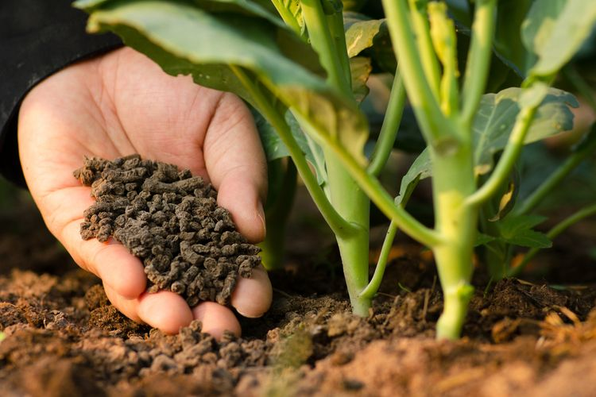

Manfaat Penggunaan Pupuk Organik
Sejarah penggunaan pupuk pada dasarnya merupakan bagian daripada sejarah pertanian. Penggunaan pupuk diperkirakan sudah dimulai sejak permulaan manusia mengenal bercocok tanam, yaitu sekitar 5.000 tahun yang lalu.